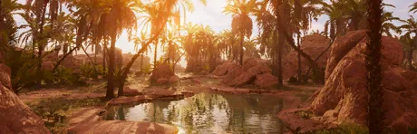
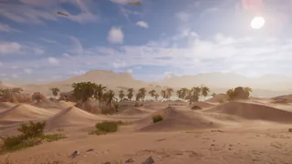
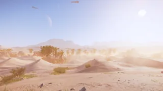
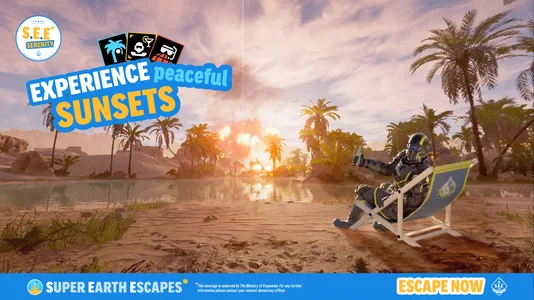
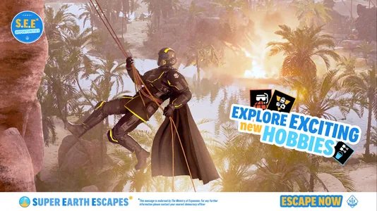
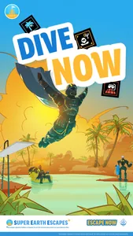

Desert Oasis

the Desert Oasis is an Oasis 生物群系 that can be found on 多种星球 in 绝地潜兵 2.
描述
The Desert Oasis is an arid 生物群系 featuring sandy dunes and some grassy patches. Aside from the grassy patches and the ferns found within them, large palm trees can also be seen growing out of the sand with tall trunks and dropping leaves. Large 自然 rocks can also be found everywhere, covered in sand.
The 浮出地面 also features knee-deep lakes of beautiful 轻型 blue water, also coming in the form of 庞大 lakes and rivers that cross the 任务 area. The skies are 通常 blue, taking on a slightly darker tone at night which allows for good visibility. The skies are 有时 covered by white, puffy clouds and thin veil-like clouds.
As for fauna, Avian, 两栖, and Insectoid sounds can be heard, and at least one dragonfly-like 生物 can be seen floating and flying around.
Visually, Desert Oasis planets seem to be inspired by a mixture of both the dunes of the Sahara Desert and the lush patches found in the California Desert.
Environmental Conditions
 酷热
酷热
环境危害
- Slowing Ferns, which slow any 绝地潜兵 passing through them down.
- Even though most of the water found is either shin- or knee-deep, occasional deep pits of water can still be found (especially on 爆炸 sites), which can drown a careless 绝地潜兵.
天气
- Cloudy
- Cloudy 天气 is the normal 天气 state for the Desert Oasis, with the skies being at least lightly covered by clouds.

- 清楚
- During Clear 天气, the Desert Oasis is significantly hotter and more arid. The skies are completely cloudless, and heat distortion 效果 are significantly more powerful than usual.

其他
On the 绝地潜兵 2 官员 twitter, ads from "超级地球 Escapades" would be posted in order to tease the Oasis 生物群系

Oasis Teaser #1 from 超级地球 Escapes[1]
Oasis Teaser #2 from 超级地球 Escapes[2]
Poster for the Deset Oasis 生物群系 from 超级地球 Escapades[3]- 战略配备 Icons Shown In Ad Oasis 2[2]
- 战略配备 Icons Shown In Ad Oasis 2[2]
Planets
 Zygos
Zygos- Fronteria
 Big Rock
Big Rock
变更历史
1.006.202
2026-04-28
变更
- Added to the game.
参考
- ↑ 1.0 1.1 "Oasis Planets.
经验值 peace. Briefly." 绝地潜兵2 Tweet. Published on May 1, 2026. - ↑ 2.0 2.1 2.2 2.3 "Oasis Planets.
充能. Reflect. Redeploy." 绝地潜兵2 Tweet. Published on May 3, 2026. - ↑ "Citizens, there's still time to book your Brilliance escape!" 绝地潜兵2 Tweet. Published on July 16, 2026.